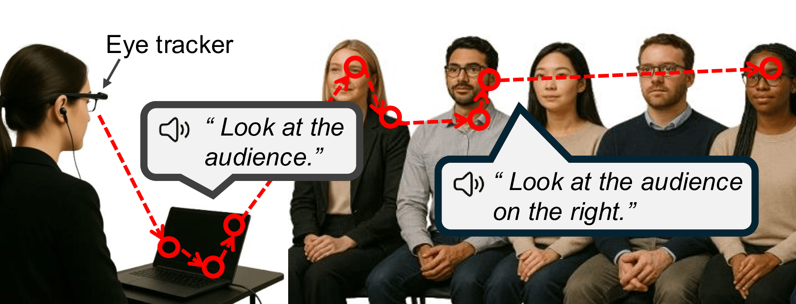
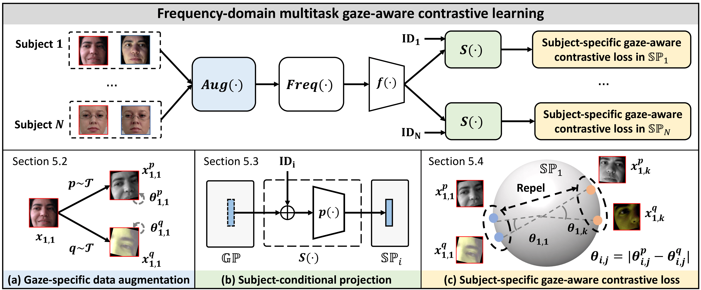
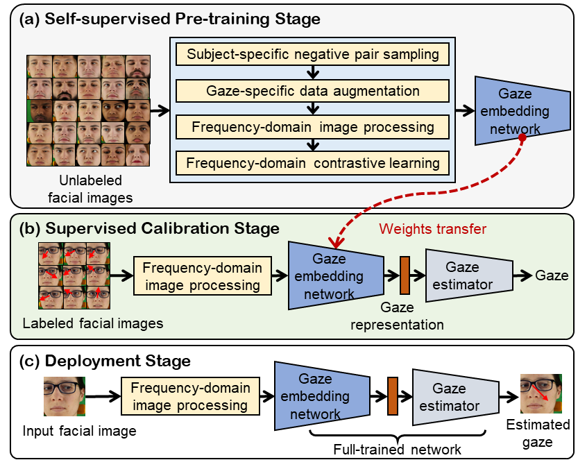
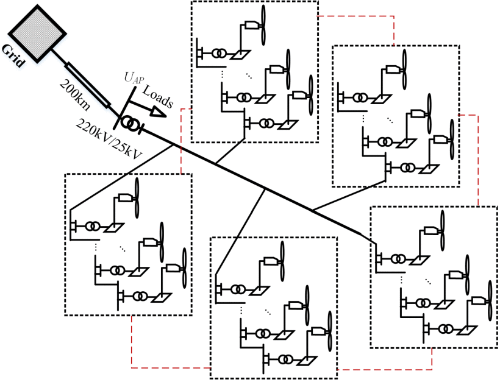

|
Lingyu Du I am a Ph.D. candidate in the Embedded Systems Group of the Computer Science Departments at Delft University of Technology, the Netherlands, supervised by Dr. Guohao Lan and Prof. Dr. Koen Langendoen. I obtained my Master’s and Bachelor’s degrees (Honors Program) in Control Science and Engineering from Harbin Institute of Technology, Harbin, China, in 2021 and 2019, respectively. My research lies in the intersection of pervasive systems and machine learning, with a focus on enhancing efficiency and trustworthiness of machine learning systems and developing human-centered applications.
Office: 2.W.560, Building 28, Van Mourik Broekmanweg 6, Delft I am currently in the job market. |
{kind=link}
News
|
Publications |
|

|
Talk to Me, Not the Slides: A Real-Time Wearable Assistant for Improving Eye Contact in Presentations
Lingyu Du, Xucong Zhang, Guohao Lan arXiv preprint, 2025 A real-time wearable system that actively assists speakers in maintaining effective eye contact with the audience during live presentations. |
|

|
EfficientGaze: Resource-efficient Gaze Estimation via Frequency-domain Multi-task Contrastive Learning
Lingyu Du, Xucong Zhang, Guohao Lan ACM Transactions on Sensor Networks, ACM TOSN, 2025, [Project page / Code] A resource-efficient gaze estimation framework that significantly reduces the reliance on labeled data and improve the computational efficiency for inference and calibration. |
|
|
SecureGaze: Defending Gaze Estimation Against Backdoor Attacks
Lingyu Du, Yupei Liu, Jinyuan Jia, Guohao Lan The 23rd ACM Conference on Embedded Networked Sensor Systems ACM SenSys, 2025, [Project page / Demo / Code] The first work that investigates the backdoor vulnerability of gaze estimation models and proposes a framework to identify backdoored gaze estimation models. |
|
|
PrivateGaze: Preserving User Privacy in Black-box Mobile Gaze Tracking Services
Lingyu Du, Jinyuan Jia, Xucong Zhang, Guohao Lan Proceedings of the ACM on Interactive, Mobile, Wearable and Ubiquitous Technologies IMWUT/UbiComp, 2024, [Project page / Demo / Code] An approach to transform raw images to obfuscated images that do not contain private attributes of users but can be used for effective gaze estimation by black-box models. |
|

|
FreeGaze: Resource-efficient Gaze Estimation via Frequency-domain Contrastive Learning
Lingyu Du, Guohao Lan The 20th International Conference on Embedded Wireless Systems and Networks EWSN, 2023, [Project page / Code] An approach that achieve comparable performance with the supervised baseline, while enabling up to 6.81 and 1.67 times speedup in calibration and inference, respectively. |

|
Through the Eyes of Emotion: A Multi-faceted Eye Tracking Dataset for Emotion Recognition in Virtual Reality
Tongyun Yang, Bishwas Regmi, Lingyu Du, Andreas Bulling, Xucong Zhang, Guohao Lan Proceedings of the ACM on Interactive, Mobile, Wearable and Ubiquitous Technologies IMWUT/UbiComp, 2025, [Project page / Code] A eye-tracking dataset in VR, combining high-frame-rate periocular videos and high-frequency gaze data to enable accurate, multimodal emotion recognition. |
|

|
Coordination Strategy of Large-Scale DFIG-Based Wind Farm for Voltage Support With High Converter Capacity Utilization
Zhen Dong, Zhongguo Li, Lingyu Du, Yixing Liu, Zhengtao Ding IEEE Transactions on Sustainable Energy, 2020 A distributed active power and reactive power coordination scheme for access point voltage support. |
Professional Services
|
|
This home page is adapted from the template of Jon Barron's website. |